In an earlier example we considered a free surface Navier–Stokes problem in which the interface between two viscous fluids was deformed to a prescribed shape and then allowed to relax. This example considers a similar problem in which the two fluids occupy a cylindrical domain which is orientated such that its axis of symmetry is normal to the equilibrium position of the interface. The problem is assumed to be axisymmetric and so the computational domain is rectangular as before, with the difference here that the governing equations are the axisymmetric Navier–Stokes equations as opposed to the two-dimensional Cartesian Navier–Stokes equations employed by the other example. These equations are discussed in detail in another tutorial. Otherwise, the same overall strategy is employed. Since the implementation of the Navier–Stokes elements in oomph-lib is based on the Arbitrary Lagrangian Eulerian form of the equations, we can discretise the computational domain using a boundary-fitted mesh which deforms in response to the change in position of the interface. The positions of the nodes in the ‘bulk’ of the mesh are determined by treating the interior of the mesh as a fictitious elastic solid and solving a solid mechanics problem, a technique which we refer to as a ‘pseudo-solid node update strategy’. The deformation of the free surface boundary itself is imposed by solving the kinematic boundary condition for a field of Lagrange multipliers at the interface, and this condition is discretised by attaching FaceElements to those ‘bulk’ elements in the ‘lower’ of the two fluids which have boundaries adjacent to the interface.
Choosing an appropriate interface deformation
The two-dimensional problem was started impulsively from a set of initial conditions such that the fluid was at rest and the interface was prescribed to be a cosine curve. Since this was an eigenmode of the system, the shape of the interface remained ‘in mode’ throughout the simulation. Choosing a single eigenmode as an initial condition allowed the results of the simulation to be compared with an analytical solution, and as we wish to do the same thing here we choose a zeroth-order Bessel function of the first kind, 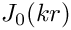, where  is a wavenumber and
is a wavenumber and  is the radial spatial coordinate. This function has the property that its derivative with respect to evaluated at
is the radial spatial coordinate. This function has the property that its derivative with respect to evaluated at  is zero, which must be the case if the interface is to be smooth at the symmetry boundary (the central axis of the cylinder).
is zero, which must be the case if the interface is to be smooth at the symmetry boundary (the central axis of the cylinder).
A further consideration is that we want the equilibrium state of the system to be such that the interface is a flat line at  , where
, where  is the axial coordinate. This state can only be reached if we choose an initial deformation 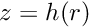 which is volume conserving, and we therefore require
is the axial coordinate. This state can only be reached if we choose an initial deformation 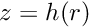 which is volume conserving, and we therefore require
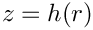
to be satisfied, where 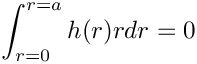 is the radius of the cylindrical container (or the width of the computational domain). Since in our case  , and we will choose a computational domain of width 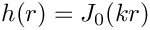, our initial condition must therefore satisfy
, and we will choose a computational domain of width 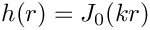, our initial condition must therefore satisfy
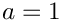
Using the properties of Bessel functions we find that this condition is met if 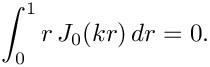, and hence the values of are constrained to be zeroes of 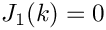.
Furthermore, the properties of Bessel functions are such that the derivative of with respect to , evaluated at any point along the -axis which corresponds to a zero of 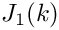, is itself zero. The velocity boundary condition in the axial direction is therefore the traction-free condition 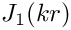. This could be physically realised by having a ‘slippery’ outer wall where the contact line can move but the contact angle is fixed at 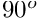, and is in fact an identical condition to the symmetry boundary condition prescribed at the axis of symmetry ( ).
The example problem
We will illustrate the solution of the unsteady axisymmetric Navier–Stokes equations using the example of a distorted interface between two viscous fluids which is allowed to relax. The domain is symmetric about the line , which corresponds to the axis of the cylindrical container.
Solve 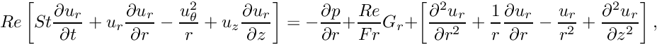 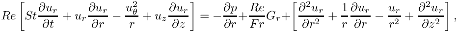
and 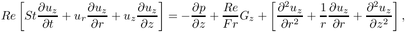 in the ‘lower’ fluid, and 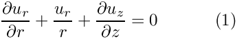 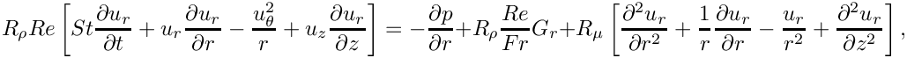 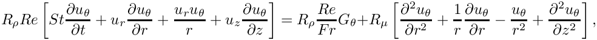 and 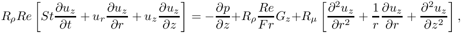 in the ‘upper’ fluid. Gravity acts in the negative 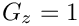 on the top ( 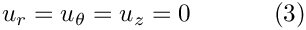) and bottom ( 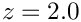) solid boundaries and the symmetry boundary conditions 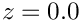 on the left ( 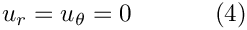) and right ( We denote the position vector to the interface between the two fluids by 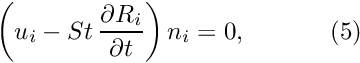 and the dynamic condition 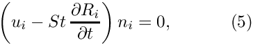 |
![\[ Re \left[ St \frac{\partial u_z}{\partial t} + u_r \frac{\partial u_z}{\partial r} + u_z \frac{\partial u_z}{\partial z} \right] = -\frac{\partial p}{\partial z} + \frac{Re}{Fr} G_z + \left[ \frac{\partial^2 u_z}{\partial r^2} + \frac{1}{r}\frac{\partial u_z}{\partial r} + \frac{\partial^2 u_z}{\partial z^2} \right], \]](form_19.png)
 , which is subject to the kinematic condition
, which is subject to the kinematic condition The non-dimensional, symmetric stress tensor in the ‘lower’ fluid is defined as 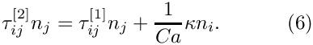 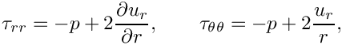 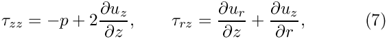 and that in the ‘upper’ fluid is defined as 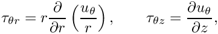 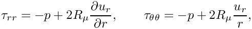 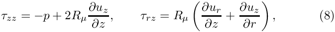 The initial shape of the interface is defined by 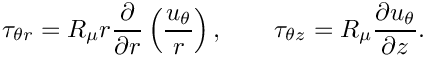 where 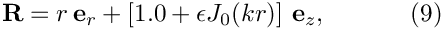 is the amplitude of the initial deflection, |
Results
The figure below shows a contour plot of the pressure distribution taken from an animation of the flow field, for the parameters 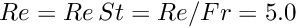, 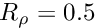, 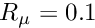 and  .
.

The restoring forces of surface tension and gravitational acceleration act to revert the interface to its undeformed flat state. The interface oscillates up and down, but the motion is damped as the energy in the system is dissipated through viscous forces. Eventually the interface settles down to its equilibrium position, as can be seen in the following time-trace of the height of the interface at the left-hand edge of the domain ( ).

Validation
The free surface boundary conditions for the axisymmetric Navier–Stokes equations have been validated against an analytical test case, and we present the results in the figure below. For sufficiently small amplitudes, 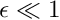, we can linearise the governing equations and obtain a dispersion relation 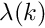. In the two-dimensional single-layer example we discussed the derivation of such a dispersion relation, and the technique used for this problem is very similar. The major difference is that the proposed separable solution for the linearised equations is of the form
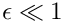
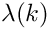
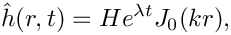
and
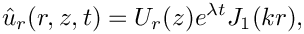
As in the two-dimensional two-layer example, we will have a linear system containing nine unknowns, rather than the five unknowns that arise from a single-fluid problem. The real and imaginary parts of 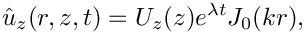 correspond to the growth rate and the frequency of the oscillating interface respectively, and can be compared to numerical results computed for given values of the wavenumber . We choose an initial deflection amplitude of 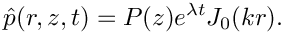 and determine the growth rate and frequency of the oscillation from a time-trace of the left-hand edge of the interface.

Global parameters and functions
As in the earlier example, we use a namespace to define the dimensionless parameters  , 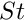, 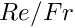 and 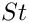. Since we are solving for the unknown bulk nodal positions by treating the interior of the mesh as a fictitious elastic solid, we also need to define the Poisson ratio for this ‘pseudo-solid's’ generalised Hookean constitutive law,
, 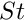, 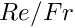 and 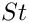. Since we are solving for the unknown bulk nodal positions by treating the interior of the mesh as a fictitious elastic solid, we also need to define the Poisson ratio for this ‘pseudo-solid's’ generalised Hookean constitutive law,  . As before, we define the density and viscosity ratios of the top fluid to the bottom fluid and a unit vector
. As before, we define the density and viscosity ratios of the top fluid to the bottom fluid and a unit vector  which points in the direction of gravity. The only difference from before is that in this case must have three dimensions since this is an axisymmetric problem.
which points in the direction of gravity. The only difference from before is that in this case must have three dimensions since this is an axisymmetric problem.
The driver code
The first section of the driver code is identical to that of the earlier example. We define a command line flag which allows us to run a ‘validation’ version of the code (for oomph-lib's self-testing routines) and check that the non-dimensional quantities provided in the Global_Physical_Variables namespace are self-consistent. Next we specify the duration of the simulation and the size of the timestep. If we are running the code as a validation, we set the length of the simulation such that only two timesteps are taken. The direction in which gravity acts is defined to be vertically downwards.
Finally, we build the problem using the ‘pseudo-solid’ version of RefineableAxisymmetricQCrouzeixRaviartElements and the BDF<2> timestepper, before calling unsteady_run(...). This function solves the system at each timestep using the Problem::unsteady_newton_solve(...) function before documenting the result.
The mesh class
The mesh class is almost identical to that in the two-dimensional problem. The only difference is that, given that this (specific) mesh is to be used in an axisymmetric problem, it does not make sense to allow the mesh to be periodic in the horizontal direction.
The problem class
The problem class is almost identical to the two-dimensional problem. The only modification arises in the arguments of deform_free_surface(...), as the initial shape of the interface is a Bessel function as opposed to a cosine curve.
The problem constructor
The constructor starts by building the timestepper and setting the dimensions of the mesh. The number of elements in the and directions in both fluid layers are specified. The next section of the constructor is exactly as before. We build the bulk mesh, create an error estimator and set the maximum refinement level. An empty surface mesh is created and populated with a call to create_interface_elements, before the two meshes are combined to form the global mesh. Next we define the boundary conditions. On the top and bottom boundaries ( and ) we apply the no-slip condition by pinning all three velocity components. On the outer (solid) wall (  ) we pin the radial (no penetration) and azimuthal (no slip) components but not the axial component. This simulates the "slippery" outer wall. These conditions are also applied at the symmetry boundary ( ). The vertical position of the nodes on the top and bottom boundaries are also pinned.
) we pin the radial (no penetration) and azimuthal (no slip) components but not the axial component. This simulates the "slippery" outer wall. These conditions are also applied at the symmetry boundary ( ). The vertical position of the nodes on the top and bottom boundaries are also pinned.
We pin the horizontal position of all nodes in the mesh as well as the azimuthal velocity components throughout the bulk of the domain (since in an axisymmetric problem these should remain zero always).
The remainder of the problem constructor is identical to that of the two-dimensional problem. We create a generalised Hookean constitutive equation for the pseudo-solid mesh before looping over all elements in the bulk mesh and assigning pointers to the Reynolds and Womersley numbers, and 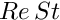, the product of the Reynolds number and the inverse of the Froude number, , the direction of gravity, , the constitutive law and the global time object. For those elements which correspond to the upper fluid layer, we also assign pointers for the viscosity and density ratios,  and . We pin one degree of freedom and call the function which assigns the boundary conditions, before finally setting up the equation numbering scheme.
and . We pin one degree of freedom and call the function which assigns the boundary conditions, before finally setting up the equation numbering scheme.
Initial conditions
The set_initial_conditions() function is very similar to that in the two-dimensional problem. We loop over all nodes in the mesh and set all three velocity components to zero, before calling Problem::assign_initial_values_impulsive(). This function copies the current nodal values and positions into the required number of history values for the timestepper in question, simulating an impulsive start.
Boundary conditions
The set_boundary_conditions() function is very similar to that in the two-dimensional problem.
Actions before and after adaptation
These functions follow exactly the same structure as those in the two-dimensional problem.
Create interface elements
This function is identical to that in the two-dimensional problem, with the exception that instead of creating interface elements of the type
we are creating interface elements of the type
where ELEMENT is the templated bulk element type.
Delete interface elements
This function is identical to that in the two-dimensional problem.
Prescribing the initial free surface position
At the beginning of the simulation the interface is deformed by a prescribed function (9), implemented in the function deform_free_surface(...), which cycles through the bulk mesh's Nodes and modifies their positions such that the nodes on the free surface follow the prescribed interface shape and the bulk nodes retain their fractional position between the solid boundaries and the (now deformed) interface.
Post-processing
This function follows an identical structure to that in the two-dimensional problem.
The timestepping loop
The function unsteady_run(...) is used to perform the timestepping procedure, and is very similar to that in the two-dimensional problem. The only difference arises from the fact that the initial interface deformation is a Bessel function rather than a cosine curve.
The rest of the function is identical to before.
Source files for this tutorial
- The source files for this tutorial are located in the directory:
demo_drivers/axisym_navier_stokes/two_layer_interface_axisym/ - The driver code is:
demo_drivers/axisym_navier_stokes/two_layer_interface_axisym/elastic_two_layer_interface_axisym.cc
PDF file
A pdf version of this document is available.